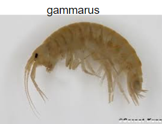
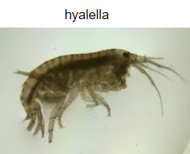

We count gammarus and hyalella which are both genus of amphipods.
Gammarus tend to have equal length 1st and 2nd antennae. Gammarus also have a “whisker” like appendage on their 2nd antennae.
We don’t get these a lot so try your best!

